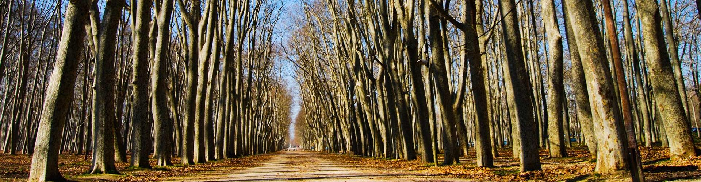

Ruta · Girona
Aquest itinerari us permetrà conèixer dos dels principals pulmons verds de la ciutat, situats al nord-oest del nucli urbà de Girona: els parcs de la Devesa i de les Ribes del Ter, situats a banda…